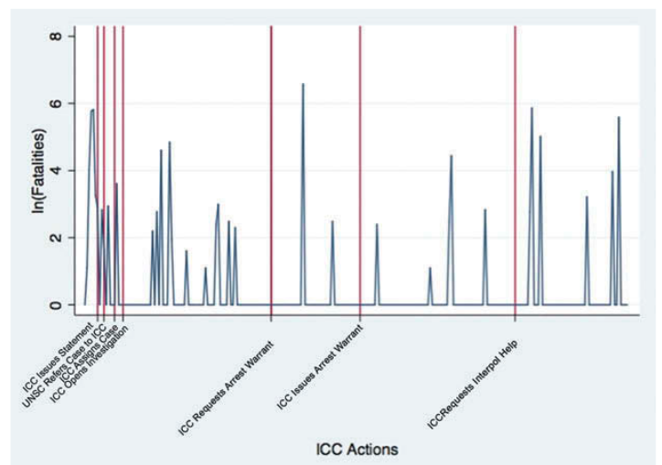
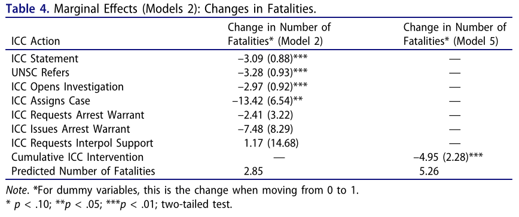
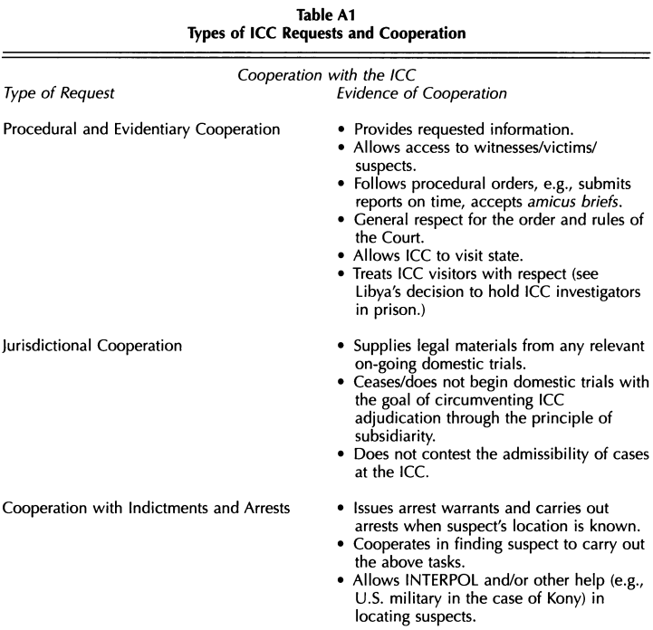
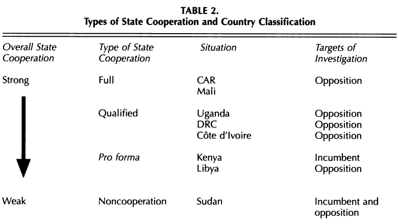
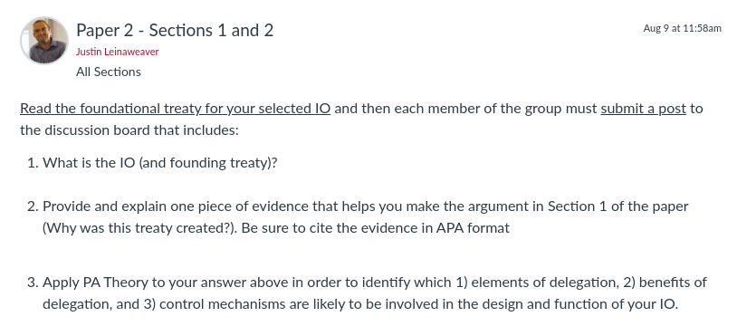

II. International Institutions for Mutual Restraint
Effectiveness Analysis
The International Criminal Court (ICC)
Justin Leinaweaver (Fall 2026)
[Rome Statute of the International Criminal Court (1998)]
Article 1: The Court
An International Criminal Court (‘the Court’) is hereby established. It shall be a permanent institution and shall have the power to exercise its jurisdiction over persons for the most serious crimes of international concern, as referred to in this Statute, and shall be complementary to national criminal jurisdictions. The jurisdiction and functioning of the Court shall be governed by the provisions of this Statute.
[Has the ICC been effective?]
Hillebrecht (2016) “The Deterrent Effects of the International Criminal Court: Evidence from Libya”
Hillebrecht & Straus (2017) “Who Pursues the Perpetrators? State Cooperation with the ICC”
[Diagram the Argument]
[Has the ICC been effective?]
[Diagram the Analyses]
Where does the data come from?
How are they analyzing the data?
What do they conclude?
[Hillebrecht (2016): The Model]
Interests
Institutions
Interactions
[Hillebrecht (2016): 1) Sources & 2) Operationalizations]
Outcome Variables
Predictor Variables
[Hillebrecht (2016): Analysis]

[Hillebrecht (2016): Analysis]

[Has the ICC been effective?]
Hillebrecht (2016) “The Deterrent Effects of the International Criminal Court: Evidence from Libya”
Hillebrecht & Straus (2017) “Who Pursues the Perpetrators? State Cooperation with the ICC”
[Hillebrecht & Straus (2017): The Model]
Interests
Institutions
Interactions
[Hillebrecht & Straus (2017): Sources & Operationalizations]

Level of Cooperation
“Full”
“Qualified”
“Pro forma”
“noncooperation” or rejection”
[Hillebrecht & Straus (2017): 1) Data Sources & 2) Operationalizations]

[Hillebrecht & Straus (2017): 1) Data Sources & 2) Operationalizations]
[Has the ICC been effective?]
Hillebrecht (2016) “The Deterrent Effects of the International Criminal Court: Evidence from Libya”
Hillebrecht & Straus (2017) “Who Pursues the Perpetrators? State Cooperation with the ICC”
[Paper 2 - IO Design Analysis]
Submit a report that describes and analyzes an international organization.
Why was this international organization created? (e.g. what problem was it designed to address and why is the problem important?)
In what specific ways was the foundational treaty of your selected international organization designed to provide the “benefits” of delegation? Be sure to consider PA Theory, Legalization and the Rational Design literatures.
How effective has the organization been in addressing the problem that motivated its creation?
